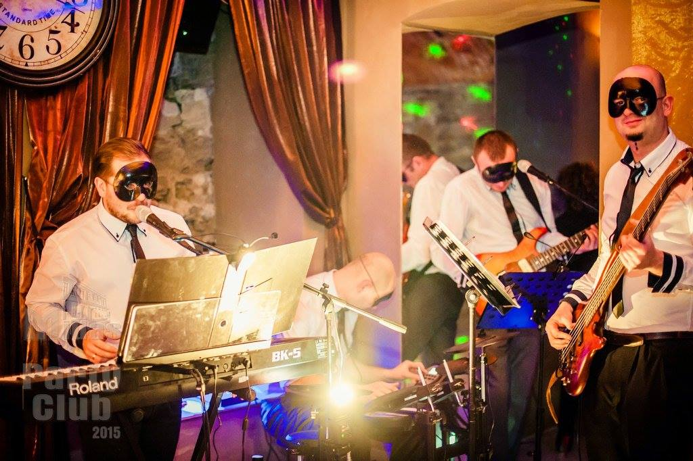

Party Club & Bankiety
Party Club – bankiety
Party Club to 200 letnie podziemia pod Midasem. Oryginalne w 100% ściany z głazów piaskowca i sklepienia ceglane oddają wyjątkowy historyczny klimat. Oświetlenie za pomocą prawdziwych żagwi, świec na żyrandolach, kinkietach jest wyróżnikiem dla każdego bankietu, prawdziwy ogień oświetlenia oraz kominka bije prawdziwym ciepłem.Granitowe schody prowadzą bezpośrednio na płytę Strzyżowskiego Rynku, a goście hotelowi mogą zejść wprost ze swoich pokoi poprzez recepcje do podziemi. Lokal kompleksowo przygotowany do organizowania przyjęć, szkoleń, bankietów, imprez integracyjnych. Wyposażony w pełni w meble, zastawę stołowa, kuchnie z chłodniami, kostkarką, stół szwedzki z podgrzewaczami, Włoski expres ciśnieniowy do kawy z gotowymi recepturami. Ogrzewanie lokalu podłogowe centralne, doskonała wentylacja, drzwi automatyczne to najwyższy standard klimatu restauracyjnego.
Przestrzeń taneczna wyposażona w nagłośnienie estradowe firmy Peavey, oświetlenie dyskotekowe lasery, LED oraz wytwornica dymu zaprojektowane w sposób pozwalający delektować się mocnym dźwiękiem a jednocześnie nie zakłócając rozmów gości przy stolikach w salach bankietowych. Doskonała akustyka zbiera pochwały grających muzyków.
Lokal do wynajęcia do samodzielnego przygotowania imprezy lub na zlecenie oferta indywidualna wraz z cateringiem dla grup do 70 osób.
Cena wynajmu lokalu już od 500zł za dobę wraz z wyposażeniem.
Zdjęcia obok przedstawiają możliwości aranżacji lokalu na potrzeby określonych okoliczności na bazie schematu rozmieszczenia pomieszczeń, jednakowe krzesła bankietowe w stylu dworskim w kolorze ceglanym oraz stoły na postumentach żeliwnych zapewniają wysoki komfort biesiadników, oraz dużą dowolność kompozycji sal. Potężne mury to nie tylko wspaniała akustyka ale również gwarancja że głośna muzyka nie zakłóci sąsiedztwa podczas biesiady do samego rana gdyż żaden dźwięk niewydobyta się poza lokal.



Party Club Midas czeka na Ciebie!
Dzięki gotowości wyposażenia, przygotowanie imprezy to kwestia 2 godzin, w południe zapraszasz gości, wieczorem już biesiada.Lokal doskonały na 18stki, wieczory Panienskie, wesela do 70 osób, komunie, jubileusze, spotkania rodzinne i biznesowe. Imprezy integracyjne wraz z noclegami i wyżywieniem.
Niezapomniane wieczory poetyckie: Wspaniała akustyka: